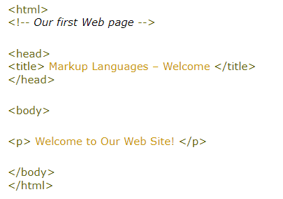
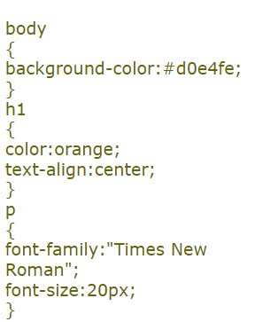

A markup language is a modern system for annotating a document in a way that is syntactically distinguishable from the text. The idea and terminology evolved from the "marking up" of manuscripts, i.e., the revision instructions by editors, traditionally written with a blue pencil on authors' manuscripts.
A common feature of many markup languages is that they intermix the text of a document with markup instructions in the same data stream or file.

HyperText Markup Language (HTML) – the original markup language that was defined as a part of implementing World Wide Web.
Cascading Style Sheets (CSS) is a style sheet language used for describing the presentation semantics (the look and formatting) of a document written in a markup language.
